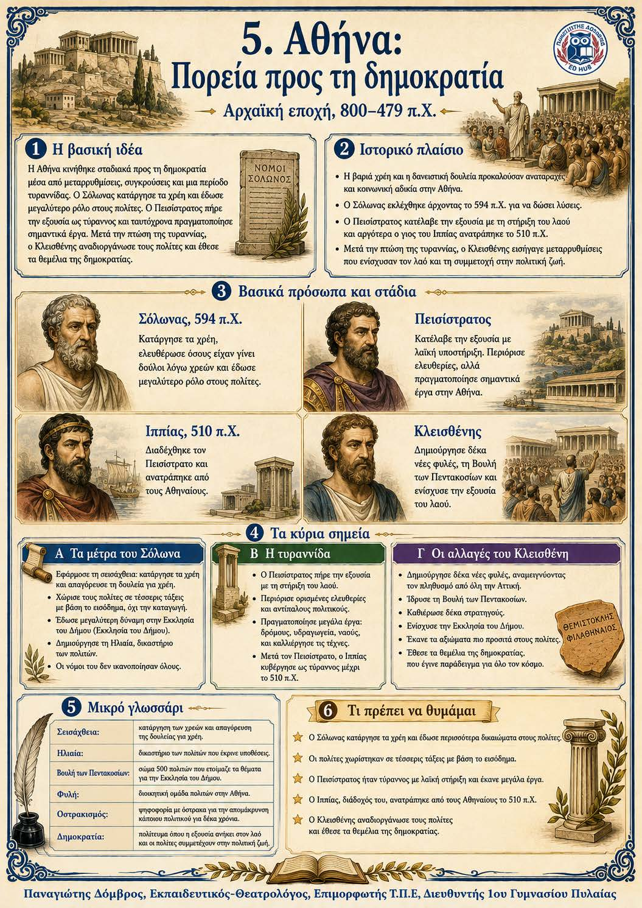

Πληροφοριογράφημα ενότητας
Το πληροφοριογράφημα αυτής της ενότητας δεν έχει ανέβει ακόμη. Οι σημειώσεις παραμένουν πλήρως διαθέσιμες.

Κεφάλαιο 4 · Αρχαϊκή εποχή, 800–479 π.Χ.
Η Αθήνα προχώρησε προς τη δημοκρατία μέσα από μεταρρυθμίσεις, συγκρούσεις και μια περίοδο τυραννίας. Ο Σόλωνας κατάργησε τα χρέη και διεύρυνε τη συμμετοχή των πολιτών, χωρίς όμως να λύσει όλα τα προβλήματα. Ο Πεισίστρατος κατέλαβε την εξουσία ως τύραννος και πραγματοποίησε σημαντικά έργα. Μετά την πτώση της τυραννίας, ο Κλεισθένης αναδιοργάνωσε τους πολίτες, ενίσχυσε την Εκκλησία του Δήμου και θεμελίωσε το δημοκρατικό πολίτευμα.
